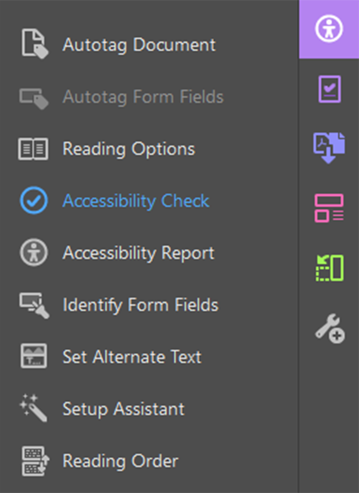
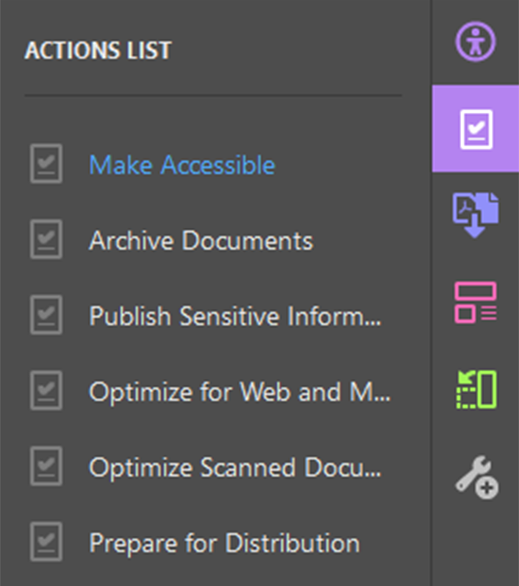
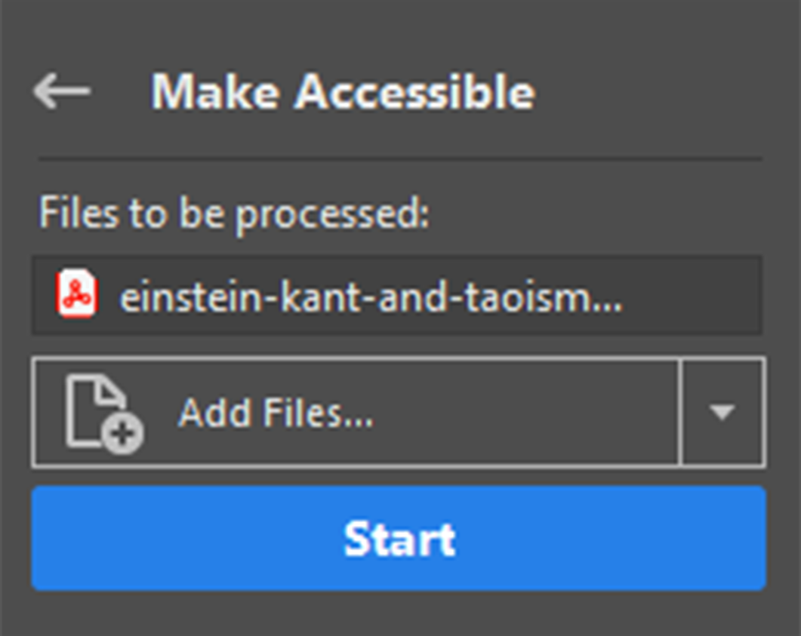
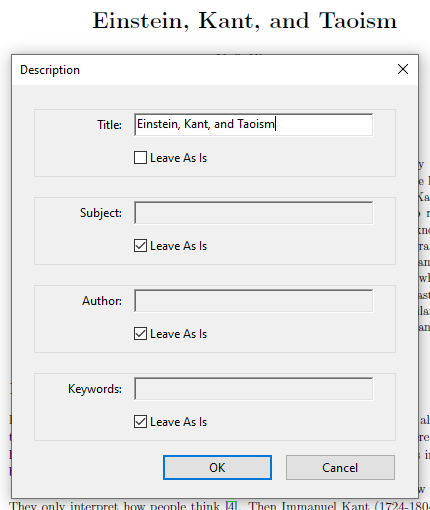
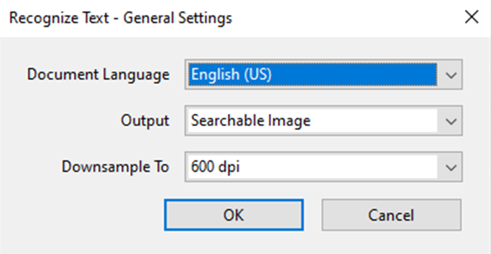
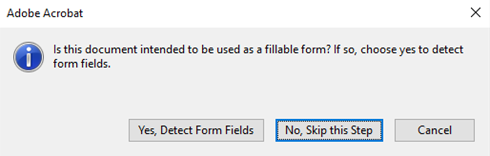
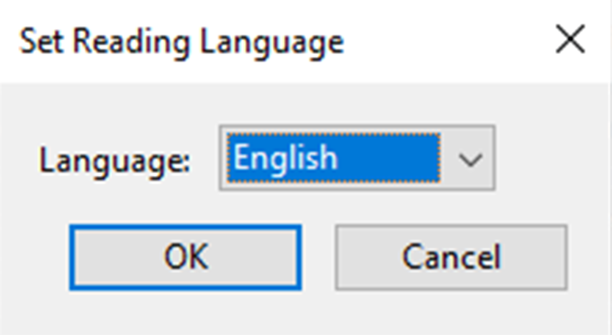
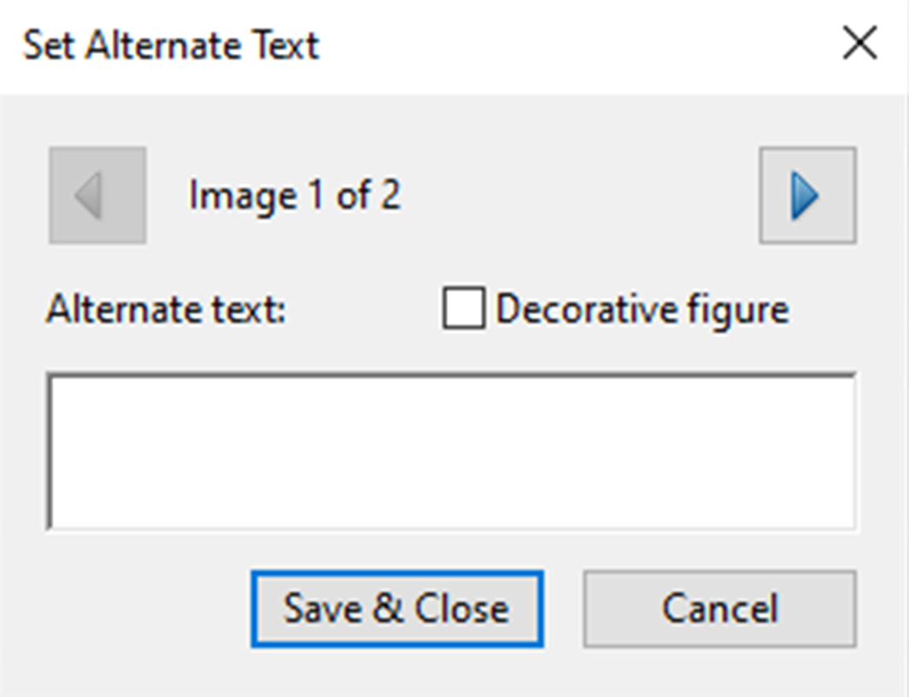
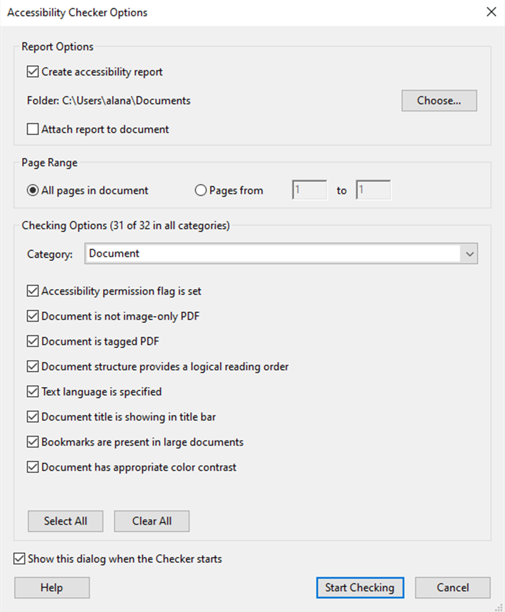

How PDF is stuctured
PDFs are structured primarily with tags. Tags are containers for all of the content within the PDF that describes what type of content it is. For example, a paragraph is denoted by a <p> tag, and a second level heading is an <h2> tag. These are extremely similar to the tags that make up HTML.
Preparing Acrobat DC for working with accessibility
Accessing tools
There are two tools that are used for accessibility that are available in the Tools section of Acrobat DC (Figure 1). These are the Accessibility tool (Figure 2) and the Action Wizard (Figure 3). You can either run them from the Tools menu or click the Add button to access them from the Tools sidebar (Figure 4).
Fig. 1
Fig. 2
Fig. 3
Fig. 4
Accessing sidebar items
There are three main panels that are used in making PDFs accessible. These are the tags panel (Figure 5), order panel (Figure 6), and the content panel (Figure 7). The tags panel is the primary source of document structure, and lets you make structural changes in the document. It's used primarily to fix tables and lists, ensure proper heading levels, and reorder some elements for reading. The order panel is a sort of interface to the tags panel. It's useful for checking and resolving reading order, changing what elements are part of what tags, and backgrounding unnecessarily tagged content. The content panel is not used often, but it contains all of the recognized content in the PDF. It may be needed if you need more control over what is in which tags.
Fig. 5
Fig. 6
Fig. 7
These panels can be accessed from the left sidebar. If they are not shown, right clicking on the left sidebar will display a menu that will allow you to add panels to the sidebar (Figure 8).
Fig. 8
Accessibility in PDF
-
Run the accessibility check from the Tools > Accessibility menu and hit "Start Checking".
 -
If the accessibility check throws an error in the Document category for "Tagged PDF", the PDF needs to be tagged with the Make Accessible tool. That can be found in the Tools > Action Wizard menu.
-
Select Make Accessible and hit "Start".
 -
A Description dialog will open that allows you to add metadata. Most of it is optional, but you should make sure that there is a readable title for the document entered; often it's good to use the heading 1 of the document as the title. (For more information on headings see the Headings page.)
 -
Next, the OCR will run to recognize text in the document; you likely don't need to change anything here unless the document language is not English.
 -
After that dialog, you are presented with the option to detect form fields. You should only choose "Yes" if the document is a form. Otherwise, choose "No, Skip this Step".
 -
The last dialog is to set the reading language, which should match the document language.
 -
The final step in the wizard is setting alternate text for all of the images that are tagged. I suggest that you just choose "Save and Close" at this point and come back to the alt text once you have taken care of the other issues.
 -
You will be presented with the Accessibility Checker again, so just choose "Start Checking".

-
-
Any issues will be displayed in the left side Accessibility Checker pane. Descriptions of many of these issues are on the Common Issues page, but you can also right click an error and choose "Explain". This will open up Adobe's help page to that issue, which will give a reason for the issue and a potential fix.
Another useful utility is the table editor. This helps in ensuring that the tagged representation of the table aligns with the visual representation. It allows you to change cells between header and data cells, as well as define column and row span for cells. This is especially useful when dealing with nested header rows, where one row may have merged cells that span multiple columns. The table editor lets you describe to Acrobat the size of these cells so that they properly apply to the columns.
Tips for working in PDF
- Always run the accessibility checker first before running Make Accessible. For most documents, it won't matter, which makes it tempting to just skip to Make Accessible. However, the times where the document is already tagged, it's likely that running Make Accessible instead of working from the existing structure will create more issues than you might have otherwise.
- PDF is rather unforgiving when working on accessibility work. Undo doesn't track many of the techniques that are used to change document structure, so making a backup of the original document and saving often, maybe even having multiple different saved files for different steps of the process if you're working with a longer file, is a good way to make sure you don't lose work.
- Along those lines, write alt text in a separate text document, so that you don't lose that progress if you change something.